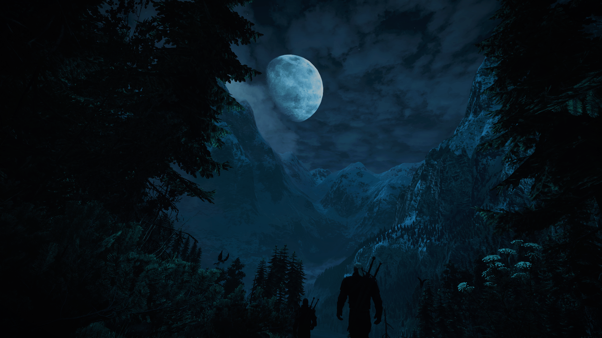
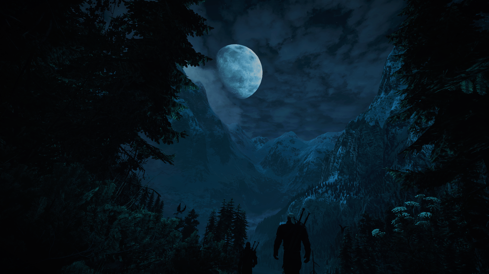
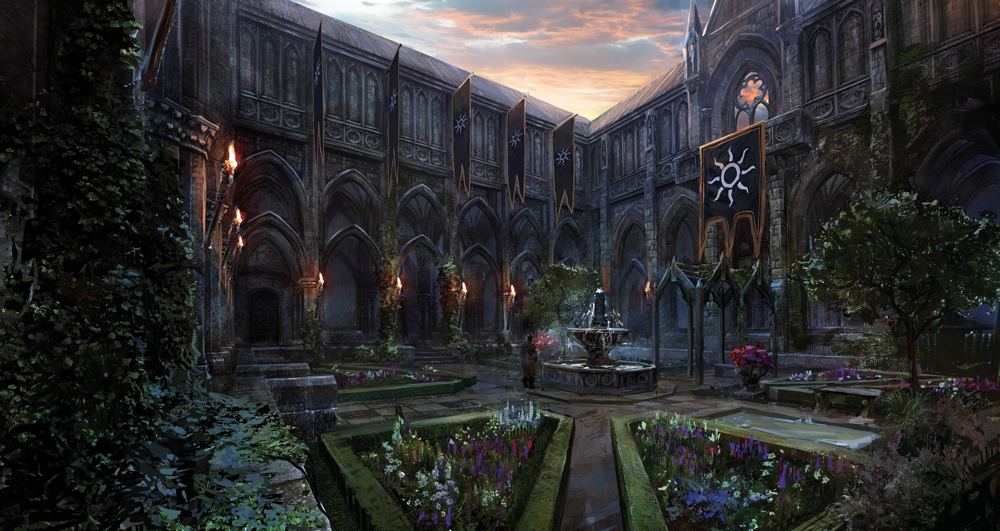
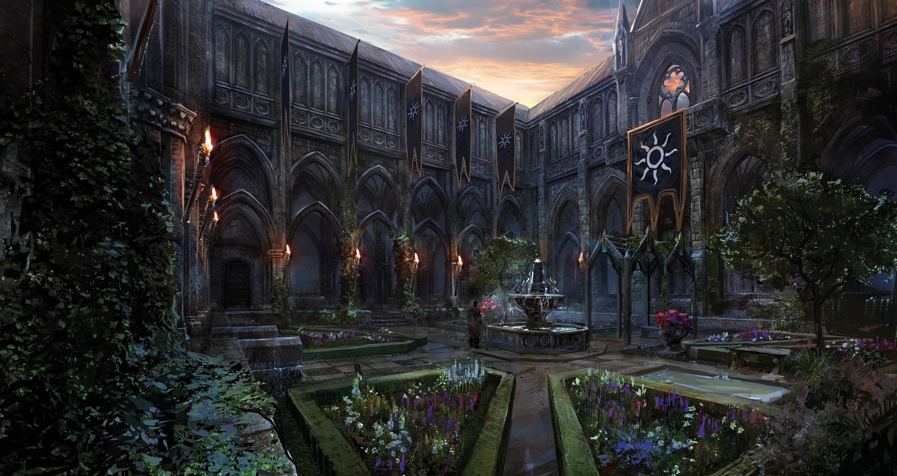
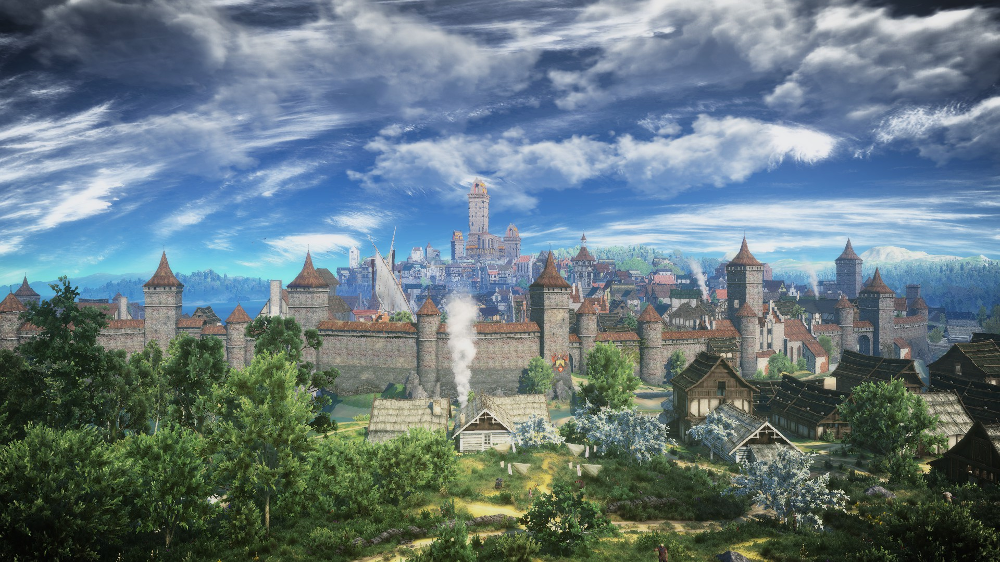
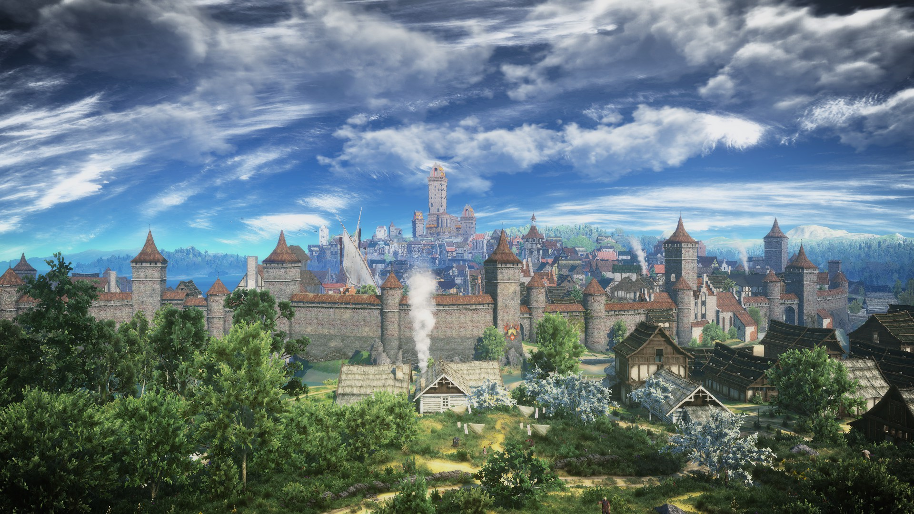

The Witcher
The Witcher este o serie de jocuri de tip RPG (Role Playing Game), bazata pe romanele de fictiune omonime scrise de autorul polonez Andrej Sapkowski. Jocurile sunt dezvoltate de compania poloneza CD Projekt Red, pe propriul lor "motor", denumit "RED engine". Seria il are in prim-plan pe Geralt of Rivia, un mutant, de meserie vanator de monstrii - un "witcher".
The Witcher / Witcher 1
The Witcher, sau "Witcher 1", cum mai este cunoscut, este primul joc dezvoltat de CD Projekt Red, lansat in luna octombrie a anului 2007. Faptul mai putin cunoscut este ca acesta a aparut ca urmare a suspendarii dezvoltarii versiunii pentru PC a jocului Baldur's Gate: Dark Alliance, la care lucra CD Projekt Red, aceasta fiind suspendata din cauza problemelor financiare ale companiei Interplay. Astfel, codul jocului a fost refolosit pentru a creea primul joc Witcher. Acesta se bazeaza pe o versiune modificata major a Aurora Engine, dezvoltat de BioWare. Povestea jocului este considerata ce mai slaba dintre cele trei, intrand, uneori, in conflict cu cartile si cu viitoarele jocuri. Nici sistemul de combat nu este cel mai avansat, dar jocul este apreciat deoarece este un inceput decent pentru o companie atat de mica din punct de vedere al resurselor, dar si din punct de vedere al renumelui.
The Witcher 2: Assassins of Kings
The Witcher 2: Assassins of Kings este, cum indica si titlul, al doilea joc din seria Witcher. Acesta a fost lansat in luna mai a anului 2011 si este primul joc din serie care foloseste REDengine. Jocul a fost atat un succes din punct de vedere al criticilor, cat si din punct de vedere comercial, CD Projekt Red reusind sa vanda 1.7 milioane de copii pana in mai 2012. De asemenea, acesta este primul joc din serie care incearca sa implementeze conceptul de open-world, rezultand intr-un fel de semi-open world, jocul avand multiple zone care pot fi explorate, dar, avand in vedere ca jocul este structurat in capitole, ficare capitol are o zona diferita, dar dupa ce se trece la alt capitol, zona precedenta nu mai este accesibila. Totodata, (in opinia mea) este primul joc din serie cu o poveste bine structurata. In concluzie, acest joc este cel care a introdus inovatii majore din toate punctele de vedere, putand fi considerat primul joc "adevarat" din serie.
Curiozitate: Cand Barrack Obama a vizitat Polonia in 2011, premierul polonez Donald Tusk i-a inmanat, printre alte cadouri, o copie a jocului.
The Witcher 3: Wild Hunt
Lansat in luna mai a anului 2015, The Witcher 3: Wild Hunt este al treilea joc din serie, si cel mai popular, atat din punct de vedere al criticilor, cat si din punct de vedere al vanzarilor, avand 1.5 milioane de precomenzi, 12 milioane de copii vandute in primul an, 30 de milioane de copii vandute pana in decembrie 2019 si primind peste 800 de premii pentru jocul anului si pentru cel mai bun RPG. Este primul joc din serie care implementeaza un sistem de open world "adevarat", jocul avand mai multe regiuni, de dimensiuni uriase. Jocul ofera o multime de side-quest-uri si activitati, precum si un card-game. Nivelul de detaliu este mult peste cel al jocurilor precedente, iar pana si in ziua de azi se gasesc optiuni noi de dialog si secrete ascunse de dezvoltatori. Din punct de vedere al graficilor, este mult superior celorlaltor jocuri, iar diversele mod-uri dezvoltate de comunitate pot face jocul sa arate mai "frumos" decat unele jocuri noi. DLC-urile (Downloadable Content) lansate intre 2015 si 2016 sunt atat de "mari", incat pot fi considerate jocuri de sine statatoare, unul dintre ele adaugand o intreaga noua regiune.
Mai jos puteti vedea o harta a regiunilor din Witcher 3 ("Scuturile" sunt apasabile)

Kaer Morhen
Kaer Morhen este prima regiune pe care o viziteaza jucatorul, fiind locul unde se desfasoara tutorialul. Regiunea este formata din mai multe ruine, un lac, si o fortareata numita Kaer Morhen. In aceasta fortareata erau creati si antrenati "witcherii".
 
 White Orchard
White Orchard este a doua regiune vizitata de jucator. Este a doua cea mai mica zona, dupa Vizima. White Orchard se afla in Temeria, regat cucerit de Imperiul Nilfgaardian. In regiune se poate observa o mare disparitate intre gandurile oamenilor, unii fiind resemnati si acceptandu-i pe nilfgaardieni, altii crezand insa ca inca au o sansa la independenta.


Vizima
Vizima estea cea de-a treia "regiune" pe care o viziteaza jucatorul. Cuvantul regiune este pus in ghilimele deoarece nu poate fi considerata o regiune propriu-zisa, jucatorul putand explora doar palatul regal. Aici poate fi gasit Ehmyr var Emreis, Imparatul Nilfgaardului
 
Velen
Velen este prima regiune "majora" vizitata de jucator. Ea este, in acelasi timp, si cea mai mare din punct de vedere a pamantului propriu-zis. Aceasta, ca White Orchard, este o fosta parte a Temeriei. Velen mai este un "No man's land", fiind regiunea cea mai salbatica de pe continent, plina de monstrii, cu rare forme de guvernare, si macinata de razboi, fiind un camp de batalie intre armatele redaniene si niflgaardiene. Regiunea prezinta atat campii, cat si mlastini, dar si un lac mare cu o insula in mijlocul lui. Velen si Norvigrad sunt singurele regiuni inter-conectate din tot jocul, restul fiind accesibile numai cu ajutorul signpost-urilor (fast travel).
Novigrad
Novigrad este cea mai "mica" regiune majora pe care o viziteaza jucatorul. Ea este situata in regatul Redanian, si este alcatuita din doua mari orase: Orasul Autonom Novigrad si Oxenfurt, precum si din imprejurimile acestora. Peisajul nu este la fel de deprimant ca in Velen, dar nu este nici prea diferit. Orasul Novigrad este un fel de centru al jocului, unde jucatorul va merge de multe ori pentru diferite necesitati. In imprejurimile orasului Oxenfurt se desfasoara primul DLC al jocului, Hearts of Stone.
 
Skellige
Skellige este un arhipelag situat la vest de continent. Ca si intindere propriu-zisa, regiunea are cea mai mare suprafata "jucabila". Geografia regiunii, dar si grupurile etnice care sunt prezente sunt inspirate de Irlanda. Arhipelagul este compus din 6 insule mari si din un numar mare de insulite. Populatia este concentrata in sapte clanuri, fiecare cu un lider, numit Jarl. Cele sapte clanuri sunt unite sub Regele Insulelor Skellige, ales de consiliul celor sapte Jarli. Pe insule se gasesc troli si giganti de gheata.

Toussaint
Toussaint este o regiune majora introdusa in DLC-ul Blood and Wine, in anul 2016. Este mai mica decat Velen, dar mai mare decat Novigrad. Toussaint este un ducat independent, dar aliat cu Nilfgaard-ul. Este cunoscut pentru vinurile sale si, in general, pentru frumusetea regiunii. Prin culorile vibrante si frumusetea peisajului, contrastul cu celelalte regiuni este evident, aceasta fiind structurata ca o tara din povesti, cu cavaleri virtuosi si galanti, cu palate opulente. (imi cer scuze ca nu apare pe harta, dar nu am gasit nicio harta care sa o includa)